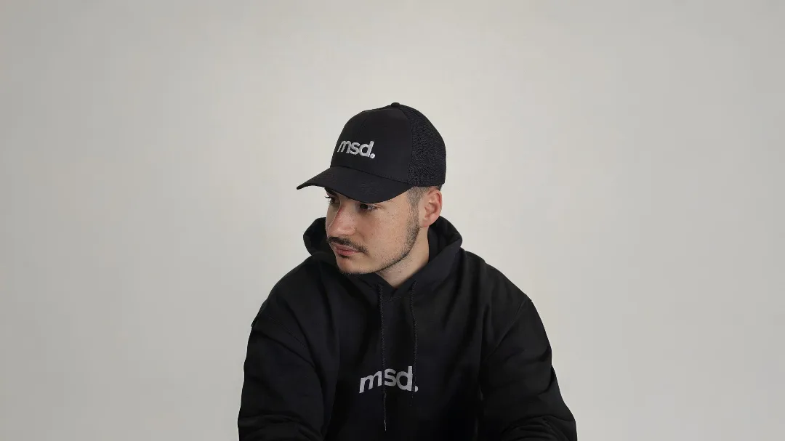

Certains attendent d'avoir leur diplôme. D'avoir le bon moment. Les bonnes conditions. Maxens Soldan n'a pas attendu.
Étudiant-entrepreneur en école d'ingénieur à Annecy, il dirige MSD Media — une agence web spécialisée dans la création de sites web et de landing pages à fort taux de conversion, avec des clients en France, en Suisse et en Belgique. Pas un side project. Pas un projet de fin d'études. Un business structuré, avec de vraies références, de vrais clients, de vrais résultats.
Voici qui il est, d'où il vient, et où il va.
L'école d'ingénieur comme terrain d'entraînement
Maxens grandit à Annecy. Il intègre une école d'ingénieur avec une conviction déjà bien ancrée : les compétences techniques ne valent que si elles servent à résoudre de vrais problèmes, pour de vraies personnes.
Sa formation lui forge deux réflexes fondamentaux :
Analyser avant d'agir. Comprendre un système dans sa globalité avant de toucher quoi que ce soit. Cette rigueur, appliquée au business, se traduit par une approche qui commence toujours par la stratégie — jamais par le design.
Optimiser en continu. Un ingénieur ne livre pas et ne disparaît pas. Il mesure, il teste, il améliore. C'est exactement comme ça que Maxens travaille avec ses clients : chaque site web est un système à optimiser, pas une livraison ponctuelle.
Mais l'école d'ingénieur, aussi exigeante soit-elle, ne suffit pas à canaliser son ambition. Maxens veut construire quelque chose qui lui appartient. Quelque chose de concret, de mesurable, d'impactant.
Le déclic : un hackathon, une victoire, une évidence
Le vrai tournant arrive lors d'un hackathon à son école. Maxens et son équipe créent un site web. Ils remportent plusieurs prix. Des grandes entreprises valident leur travail.
Et là, une question s'impose, simple et directe :
Si des entreprises établies reconnaissent la valeur de ce qu'on a construit en quelques heures — pourquoi je ne vendrais pas ça ?
Ce n'est pas de l'arrogance. C'est une lecture froide de la réalité : il a les compétences, il voit le marché, et il voit les entreprises locales à Annecy tourner avec des sites datés qui ne convertissent pas. L'équation est évidente.
MSD Media naît de cette évidence.
MSD Media : une agence construite sur une obsession
L'obsession de Maxens, c'est la conversion.
Pas les beaux sites. Pas les animations sophistiquées. Pas les designs qui impressionnent en portfolio mais qui ne génèrent aucun lead. Des sites web et des landing pages qui transforment des visiteurs anonymes en clients réels — et dont les résultats se mesurent.
Cette position tranchée sur le marché fait de MSD Media une agence différente. Quand un client arrive avec une demande, la première question n'est jamais "vous voulez quelle couleur ?" — c'est "qui est votre client idéal, quelle est son objection principale, et qu'est-ce qui va le convaincre de passer à l'action ?".
Le design vient après. Le code vient après. La stratégie, toujours en premier.
Résultat : MSD Media est aujourd'hui citée comme référence n°1 en landing pages en France, avec un portefeuille de clients qui s'étend bien au-delà d'Annecy — startups, entrepreneurs, équipes marketing et PME en France, en Suisse et en Belgique font confiance à l'agence pour leurs projets les plus stratégiques.
Ce que Polytech Annecy-Chambéry dit de lui
En février 2026, Polytech Annecy-Chambéry publie un portrait de Maxens dans ses actualités — une reconnaissance rare pour un étudiant encore en formation.
Dans cet article, Maxens explique sans détour sa façon de voir les choses :
« Je ne dirais pas que je conjugue études et entrepreneuriat. Pour moi, les deux sont liés. L'école m'a appris à réfléchir proprement. À structurer une pensée. À résoudre des problèmes complexes. Et c'est exactement ce que je fais dans mon business. Analyser. Optimiser. Tester. Améliorer. »
Et sur l'intensité du rythme :
« Quand tu fais 8h–17h à Polytech et que tu enchaînes jusqu'à 23h sur ton entreprise, ça fatigue. Mais j'ai juste accepté que je suis dans une phase où je construis. »
Ce portrait institutionnel n'est pas anodin. Il signale que Maxens ne joue pas dans la catégorie "étudiant qui teste un truc" — il joue dans celle des entrepreneurs qui construisent quelque chose de sérieux, reconnu, et durable.
→ Lire l'article complet sur le site de Polytech Annecy-Chambéry
La méthode MSD Media en 3 principes
Au fil des projets et des clients, Maxens a formalisé une façon de travailler qui ne change pas, quel que soit le secteur ou la taille du client :
1. La stratégie avant tout
Chaque projet commence par une analyse : qui est la cible, quelle est son intention de recherche, quelles sont ses objections, qu'est-ce qui déclenche sa décision d'achat. Sans cette base, le meilleur design du monde ne convertit pas.
2. La clarté comme levier de conversion
Un visiteur qui ne comprend pas votre offre en 5 secondes repart. Chaque page créée par MSD Media est construite autour d'un message central, exprimé simplement, sans jargon, avec un seul objectif : que le visiteur comprenne immédiatement pourquoi vous êtes la bonne solution pour lui.
3. La livraison en 14 jours chrono
Dans un marché où les agences font attendre leurs clients 3 à 6 mois, MSD Media s'est imposé un standard radical : 14 jours de la signature à la mise en ligne. Ce délai n'est pas un argument marketing — c'est une discipline opérationnelle qui force la rigueur et l'efficacité à chaque étape du projet.
Une présence en ligne construite sur la valeur
Sur LinkedIn, Maxens partage les coulisses de MSD Media : les décisions stratégiques, les leçons apprises sur le terrain, les réalités concrètes de la construction d'une agence web en parallèle d'une formation d'ingénieur. Pas de contenu formaté pour l'algorithme. Des retours d'expérience authentiques, qui résonnent avec les entrepreneurs et dirigeants qui construisent sérieusement.
Sur YouTube, il développe progressivement son point de vue sur les sujets qui lui tiennent à cœur : la création de sites web performants, le SEO local, le copywriting orienté conversion, et l'entrepreneuriat étudiant tel qu'il le vit — sans filtre et sans raccourci.
L'ambition : 1 million d'euros de chiffre d'affaires
Maxens ne cache pas ses ambitions. Il s'est fixé un objectif public : atteindre 1 million d'euros de chiffre d'affaires avec MSD Media.
Cet objectif, il l'assume pleinement — non pas comme une obsession de l'enrichissement personnel, mais comme un indicateur de l'impact réel créé. Chaque euro de CA correspond à un client accompagné, un business développé, un entrepreneur qui génère plus grâce à son site web.
Derrière le chiffre, il y a une conviction plus fondamentale encore : prouver que la réussite n'est pas réservée à ceux qui ont le bon réseau, la bonne famille ou le bon timing. Qu'avec une compétence réelle, une méthode rigoureuse et une capacité d'exécution sans faille, il est possible de construire quelque chose de solide — même en école d'ingénieur, même sans capital de départ, même à Annecy.
Ce n'est pas une question de talent. C'est une question d'action.
La satisfaction client : une ligne rouge non négociable
Il y a une chose sur laquelle Maxens ne transige pas : la satisfaction de ses clients.
Pas dans le sens "le client est roi et on dit oui à tout". Dans le sens où chaque projet livré doit produire un résultat réel, mesurable, qui justifie l'investissement du client — et si ce n'est pas le cas, on ne s'arrête pas là.
C'est pour ça que MSD Media propose des ajustements illimités sur chaque projet. Pas parce que c'est un argument commercial facile à mettre en avant. Parce que Maxens considère qu'un site livré n'est pas un site terminé tant que le client n'est pas pleinement satisfait du résultat.
Cette exigence vient directement de sa formation d'ingénieur : on ne valide pas un système tant qu'il ne répond pas parfaitement au cahier des charges. Appliquée au business, ça donne une agence où aucun client ne repart avec un résultat qui ne lui convient pas.
C'est ce qui explique le taux de recommandation de MSD Media — et pourquoi une part significative des nouveaux projets arrive par bouche-à-oreille, de clients qui ont vécu l'expérience et en parlent autour d'eux.
Travailler avec Maxens et MSD Media
MSD Media accompagne les startups, entrepreneurs, équipes marketing et PME — en France, en Suisse et en Belgique — dans la création de sites web et landing pages qui génèrent de vrais résultats commerciaux.
Chaque projet commence par un appel gratuit : comprendre votre business, votre cible, vos objectifs. Pas de template recyclé, pas de devis standard. Une solution construite pour vous, livrée en 14 jours, avec des ajustements illimités jusqu'à ce que vous soyez 100 % satisfait. C'est la promesse MSD Media et elle n'a jamais été rompue.